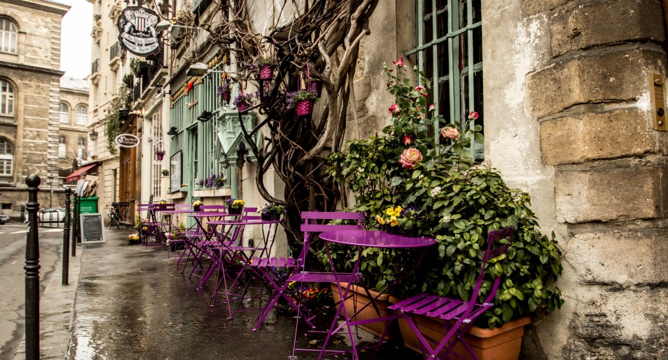
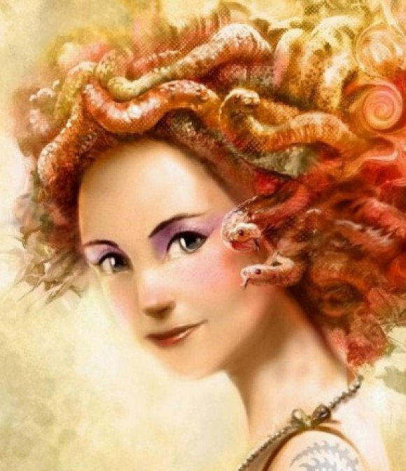
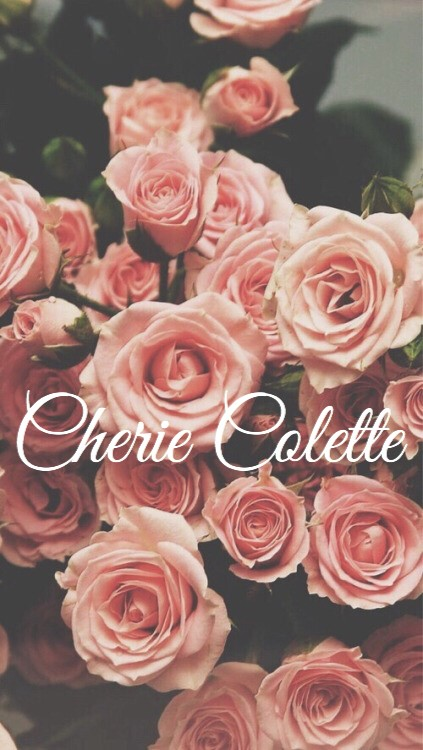
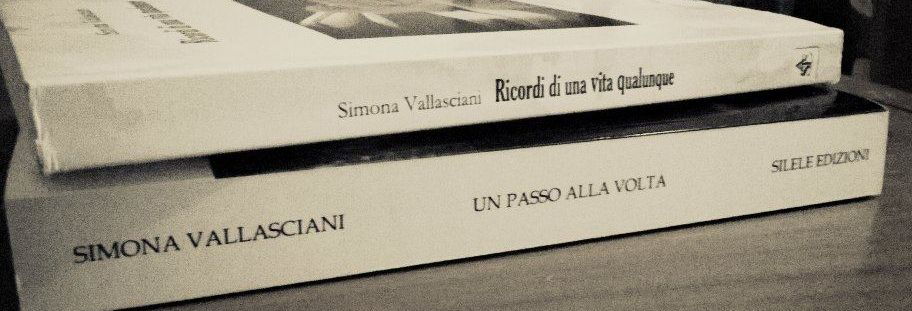

COLLABORATORI:
1) Anastasia Frollo
Sono Anastasia, laureata in lingue, amante delle serie tv e divoratrice di libri sin da piccola. Mi sono innamorata della lettura grazie a "Cipí" e "Cion Cion Blu", ma la svolta è arrivata dopo qualche anno prendendo in mano "Dieci Piccoli Indiani" della regina Agatha Christie. Da quel momento mi sono resa conto che il mio genere preferito non poteva che essere tinto di giallo: thriller, polizieschi e noir accompagnano le mie giornate ormai da anni, preferibilmente con una tisana fumante in mano!
Mi trovi qui:
bibliotecadietrolangolo.blogspot.it
2) Amanda Airola
Mi chiamo Amanda, ho 29 anni, vivo in un minuscolo paese sperduto nelle valli torinesi, adoro la mia casa perché essendo immersa nel verde mi permette di vivere a pieno la mia prima passione, ovvero gli animali, infatti sono una studentessa di veterinaria.
Amo la lettura da sempre, non ho mai smesso di leggere anche se a volte gli impegni mi rallentano un pochino. I thriller sono entrati nella rosa dei miei generi preferiti quando ancora ero molto giovane e non mi hanno mai deluso o stufato, proprio non riesco a fare a meno di partecipare ad un’indagine!
Per me non esiste niente di meglio che leggere un buon libro in una fredda giornata invernale accoccolata sul divano con un caffè fumante e i miei cani accoccolati vicino a me.
3) Barbara Betto
Amo leggere, giocare ai videogames e guardare le serie tv. Dalla Sicilia al Lazio, dall’Abruzzo alla Puglia, giro l’Italia inseguendo il mio sogno fatto di carta e inchiostro. Ah, dimenticavo, nelle mie vene scorre sangue starwarsiano quindi…May the “book” be with you! ”
Mi trovi qui:

leggendoabari.wordpress.com
4) Chiara Sardelli
Ciao a tutti, sono Chiara. Per i miei primi cinquant’anni ho letto con voracità di tutto a cominciare dai fumetti, per finire ai classici pesantucci ed eruditi. Ora continuo come posso,ma sono più selettiva. Ciò nonostante il mio amore per i gialli e soprattutto per i thriller non è stato scalfito da questi gusti più raffinati. Come prima amo leggere e sognare in solitaria. Oggi però, a differenza degli anni giovanili, mi piace confrontarmi con gli altri, esprimere e trasmettere le mie emozioni. La lettura,comunque, sta ancora ben salda in cima alla piramide dei miei vizi. Per i libri spendo con spensieratezza,con i libri passo le ore più piene e più significative, trascurando senza sensi di colpa doveri casalinghi e obblighi sociali.
5) Cristian Volpato
Mi chiamo Cristian e da qualche anno mi sono appassionato alla lettura. Prediligo il genere thriller/poliziesco ma non disdegno il genere legal-thriller. Mi affascina tutto ciò che riguarda un crimine dall'aspetto psicologico del killer, alla scienza forense, ai metodi di ricerca delle prove e delle indagini...
Adoro diversi autori, italiani e stranieri, che scrivono questo genere di libri quindi faccio un pò fatica a sceglierne uno in particolare anche se, la maggior parte, fanno parte del mondo thriller-nordico. Mi piace inoltre leggere libri di autori che non conosco o romanzi d'esordio. Non può mancare la classica visitina settimanale alla libreria di fiducia e cerco di tenermi aggiornato sulle nuove uscite dei libri che mi possono incuriosire. Ciao a tutti e buona lettura...
6) Daniela Di Pierro
Credo di aver sempre amato leggere. Da piccola mia madre mi comprava un libro a settimana.
Ricordo un libro di favole che si è completamente distrutto a furia di leggerlo! Crescendo ho affinato i miei gusti. Leggo di tutto, romanzi rosa, chick–lit, gialli, thriller e fantasy. Ma non ho ancora provato a leggere nulla di horror o fantascienza. Il mio scrittore preferito è Nicholas Sparks. Sono molto contenta di essere entrata a far parte dei collaboratori di Thriller Nord, sarà una piacevole e stimolante sfida!
Mi trovi qui:
leggendoabari.wordpress.com
7) Elena Spadafora
Ciao a tutti,
io sono Elena :)
Vivo a Milano ormai da un paio d'anni ma sono nata nel profondo sud, a Palermo!
Mi sono laureata in Lingue e letterature straniere ormai diversi anni fa ma ho poi deciso di seguire tutt'altra strada e adesso lavoro come Web designer per una rivista online.
Ho un debole per Shakespeare, per Emile Zola, per Marguerite Duras, per Colette. Amo la letteratura in ogni sua forma ma rifuggo il fantasy, i libri sono il mio hobby, il mio cibo, la mia più grande passione.
Tutto ciò che faccio quando non lavoro riguarda il mio blog e il mio canale YouTube: scrivere e parlare di libri sono le due attività che in assoluto più mi rilassano e mi divertono.
Mi trovi qui:
amaranthinemess.blogspot.it
8) Elisa Puntelli
Mi chiamo Elisa, sono una trentenne di Carrara e, da che ho memoria, non ricordo un singolo giorno in cui non mi sia persa sfogliando le pagine di un libro.
A chi mi chiede: "Perché leggi?" rispondo subito: "Perché non dovrei farlo?!".
A chi mi domanda invece, qual è il mio scrittore preferito o il libro al quale non potrei mai rinunciare, non so rispondere. Non esiste un solo scrittore così come non esiste un unico libro.
La scelta è dettata sempre da diversi fattori e muta in base alle circostanze. Dunque non c'è uno scrittore così come non c'è un libro...ce ne sono moltissimi! E, con l'andar del tempo, ce ne saranno molti altri ancora. Ho sempre letto un po' di tutto, ma la predilezione per il genere horror e thriller mi si è palesata da subito. Quindi se Proust aveva ragione nell'affermare che "Ogni lettore, quando legge, legge sé stesso", secondo voi, cosa dovrei pensare di me stessa?
Mi trovi qui:
instagram.com/la_libreria_di_omega
9) Emanuele Bavetti
Ciao! mi chiamo Emanuele e ho già un po' di anni sulle spalle, diciamo che preferisco mantenermi sul vago. Amante della letteratura ho da sempre amato leggere, con il passare degli anni ho trasformato questo piacere anche in un confronto con altre persone.
Leggo un po' di tutto con una predilezione per la fantascienza, il fantasy, il thriller nordico e la narrativa contemporanea.
Ho un blog dove mi piace scrivere di me in forma di racconti brevi. Amo la fotografia e mi piace condividere con chi mi segue questa passione.
Ogni tanto ho fatto recensioni di libri per me stesso ora creerò una sezione ad hoc per le recensioni.
Buona lettura a tutti.
Mi trovi qui:

cosementali.wordpress.com
10) Erica Puggioni
Leggo fantasy da quando avevo 7 anni e ora che ne ho 27 ho scoperto una passione per i gialli. Scienziata di formazione, non ho mai abbandonato i libri che adesso recensisco sul mio blog per editori italiani e stranieri. Nata e cresciuta in Sardegna ma trapiantata in Australia, non esco di casa se non ho almeno due libri nella borsa. Qui su ThrillerNord troverete le mie opinioni sulle nuove uscite nel mondo del crime.
Mi trovi qui:

LibrettoReviews
11) Federica Gaspari
21 anni vissuti tra le pagine di libri, le scene di film e gli episodi di serie tv. La passione per la lettura nasce in tenera età, cresce grazie ai libri di J.K. Rowling e si trasforma dopo l’incontro con Sherlock Holmes, scoprendo il genere giallo e thriller. Lettrice pendolare, tra una lezione e l’altra di ingegneria, ama tuffarsi in storie misteriose e condividere pensieri e impressioni sul suo blog “Stories - Books and movies.
Mi trovi qui:

storiesbooksandmovies.blogspot.it
12) Fiorella Carta
Ciao, mi chiamo Fiorella Carta e vengo da Buddusò, un piccolo paesino dell' entroterra sardo.
Leggo libri senza figure dall'età di 7 anni, quando mia zia mi regalò I ragazzo della Via Pal di Molnar. Da lì l'amore per la lettura è cresciuto a dismisura. Ho scoperto King e Agatha Christie subito dopo e in adolescenza i grandi classici.
Leggo di tutto, anche se i thriller sono la mia dose di adrenalina preferita.
Se vi va potete seguirmi anche sulla mia pagina Un calderone pieno di libri.
Mi trovi qui:

Uncalderonepienodilibri
13) Francesca Mogavero
Sono nata nel 1986 a Torino, dove abito e lavoro. Laureata in Filologia e Letterature dell’Antichità, collaboro con Golem Edizioni (www.golemedizioni.net) e vivo con un piede per terra, il naso nei libri, l’orecchio incollato alla radio e le mani sulla tastiera del pc o affondate nel folto manto delle mie gatte Midori e Bia. Quando non leggo, scrivo, correggo o impagino, provo ricette nuove e tradizionali, mi abbuffo di film, fumetti, serie tv e miti nordici, bevo caffè e progetto viaggi reali e fantastici. Ho pubblicato racconti horror, comedy e chick-lit in diverse antologie e dal 2014 pubblico recensioni e racconti sul mio blog “I Love Wropping”, lo spazio virtuale in cui le nuove tendenze, gli accessori e molto altro ancora diventano spunti e protagonisti di storie e pensieri. Sono una lettrice onnivora e sempre affamata, libro ("bo") è stata una delle mie prime parole. Sono entusiasta di far parte della squadra di ThrillerNord e di cimentarmi in questa avventura!
Mi trovi qui:

ilovewropping.wordpress.com
14) Giorgia Usai
Da piccola mia mamma si disperava perché odiavo leggere, poi ho scoperto Harry Potter, ho continuato con i romanzi di Jane Austen, e ora eccomi qui a parlare continuamente di libri. Adoro girare per le librerie, comprare libri nuovi e usati, e leggere ascoltando musica.
Non ho un genere preferito, ma scelgo le mie letture in base al sentimento che mi suscitano le trame e le copertine.
Vi parlo di tutto questo nel mio blog
Mi trovi qui:

sognandodietroailibri.blogspot.it
15) Giovanna Nappi
Sono Giovanna, ho 27 anni, sono pugliese e da che ho memoria mi circondo di libri.
I classici sono stati il mio primo grande amore: Jane Austen, Emily Bronte, Flaubert, Tolstoj. Quando ho scoperto gli italiani, Buzzati e Moravia soprattutto, ho capito che non me ne sarei mai più separata. Ed è così. Tutto nella mia vita è impregnato di quelle pagine: i miei studi, il mio lavoro, il mio tempo libero. Il blog è nato proprio per questo, perché avevo tanto da dire e tutto andava canalizzato in un “posto” che fosse mio.
Mi trovi qui:

thebookworm.wordpress.com
16) Ilaria Bagnati
Sono Ilaria, ho 27 anni ed abito nella splendida Urbino. Sono laureata in Psicologia Clinica e sto studiando per l’esame di stato mentre aspetto la nascita del mio primo bimbo. Ho imparato a leggere all’asilo perché volevo conoscere il mondo, da allora leggere mi ha sempre stregata, immergermi nella lettura di un buon libro mi ha sempre rapita e mi ha permesso di distrarmi e fantasticare. Forse per il mio amore verso la psicologia mi sono sempre interessate le storie di serial killer, gialli e misteri tanto che i thriller e in particolare i thriller psicologici sono diventati il genere letterario che prediligo. La mia scrittrice preferita è Patricia Cornwell; ho adorato la trilogia di Stieg Larsson che mi ha portata nel mondo dei thriller nordici e mi ha permesso di conoscere autori come Jo Nesbø e Lars Kepler.
17) Ilaria Madau
Sto per festeggiare le mie nozze d'argento con i libri, la nostra unione è cominciata ufficialmente quando ho imparato a leggere, a 6 anni, e sento che non ci lasceremo mai, tanto è vero che me li sono tatuati sulla pelle. Sì, una prova del mio amore verso il meraviglioso mondo della letteratura è incisa sul mio avambraccio sinistro: una pila di libri chiusi ed un ultimo aperto da cui esce la scritta “I've lived a thousand lives”. Quando leggo mi lascio andare, mi faccio trasportare dalle parole ed ogni storia mi lascia qualcosa, cosa che proverò a comunicare anche a voi nelle recensioni che farò qui per ThrillerNord.
18) Ilaria Murgia
Sono Ilaria, ho 26 anni e vivo a Cagliari. Segni particolari: ho sempre un libro sul comodino! La passione per
i libri mi è stata trasmessa da mia madre,vera appassionata del genere thriller! A sei anni ho imparato a
leggere e non ho più smesso. Adoro in particolare i libri che narrano storie vere, ma leggo davvero di tutto.
Da qualche mese ho aperto un blog nel quale pubblico le recensioni dei libri che leggo e le citazioni che più
mi hanno colpito. Mi trovate anche su Twitter e Instagram col nome Scaffali da leggere.
Mi trovi qui:
scaffalidaleggere.wordpress.com
19) Laura Piva
Sono Laura ed ho una doppia vita: di giorno faccio la farmacista e di sera mi trasformo in una serial reader. Amo viaggiare e parlo tre lingue straniere. Mi piace tantissimo leggere in lingua originale, senza il filtro della traduzione che a volte snatura lo stile dei testi. Negli ultimi anni ho unito la passione per la lettura a quella per i viaggi: adoro visitare i luoghi descritti nei libri e calarmi nelle atmosfere che hanno ispirato un autore.
20) Loredana Cilento
Sono Loredana, e sono un libro con dentro tanti altri libri, amo la poesia, l'arte e la musica.
Leggere è però ciò che in assoluto preferisco, perché è la mia finestra sul mondo!
"I libri sono i miei amici Silenziosi"
Sono cresciuta con Delitto e Castigo di Dostoevskij che rileggerei mille e mille volte ancora, spazio tra i vari generi dalla narrativa straniera alla saggistica, sono arrivata ai thriller contemporanei con Faletti e oggi sono innamorata dei thriller del Nord.
Sono una persona semplice che ama leggere, e spero di regalare a chi mi legge, un momento speciale, unico.
Mi trovi qui:
https://m.facebook.com/millesplendidilibrienonsolo/
21) Manuela Fontenova
Ciao, sono Manuela, sono romana ma per amore mi sono trasferita in un paesino della Tuscia, dove vivo con un marito che condivide la mia passione per la lettura e un piccolo omino di due anni e mezzo, che cresciamo a suon di baci e libri.
Ho studiato restauro e conservazione dei beni culturali, amo l’arte ma mai quanto i libri. Leggo da sempre e leggo ovunque, un’attesa dal dottore, un tragitto in treno, la fila alla posta, ogni momento è buono per leggere qualche pagina. Ho un lettore e-book ma sono una fan della carta e adoro scovare libri nei mercatini dell’usato, negli angoli del book crossing per non parlare della biblioteca, che dopo la Galleria Borghese, è il mio posto preferito nel mondo!
Adoro cucinare e sperimentare nuove piatti, mi piace avere sempre “le mani in pasta”, trovare ricette nei romanzi che leggo mi entusiasma, gli odori sono ottimi compagni di lettura, aiutano a immergersi nelle storie.
La mia preferenza è sempre andata alla narrativa ma spazio tra i generi e da qualche anno mi sto appassionando a thriller e gialli, spero di tenervi buona compagnia con le mie recensione!
22) Marcella Labianca
Mi chiamo Marcella, studi classici con incursioni di psicologia , pedagogia e comunicazione. Classe 1975, mi occupo di organizzazione di eventi e comunicazione. Figlia di un neuropsichiatra e fidanzata di un avvocato penalista, mi sono arresa alla passione per il “giallo”.
Nata e cresciuta a Bari , città-fucina di scrittori noir, sono appassionata di storia dell’arte, cinema, gatti , yoga , cucina salutistica e telefilm di detective.
Ringrazierò sempre mia nonna per avermi inculcato l’amore per la lettura ed è forse per questo che nella mia fantasia è una nonna/zia Jessica Fletcher.
Indimenticabile la puntata di Magnum P.I. e Jessica Fletcher che lavorano insieme allo stesso caso; …oggi so che non potrei mai vivere senza: Quentin Tarantino, Nero Wolfe e Meigret, o il poliziottesco all’italiana e il cinema di cronaca anni ’70 , in una città di mare … e con almeno un gatto nero in casa.
Mi trovi qui:
https://www.facebook.com/La-gatta-sul-tetto-che-scotta
23) Marco Lambertini
A circa 11 anni mi hanno regalato Dieci Piccoli Indiani che ho letto in un pomeriggio e da lì l’amore per il thriller, noir ,giallo non è ancora terminato. Ellroy e David Peace sono i miei autori culto, ma Nesbø e i nordici sono stati una stupenda scoperta.
Ogni settimana è d’obbligo la visita in libreria alla ricerca di un libro o anche solo per sfogliare o poter pensare di leggere qualcosa di nuovo. In oltre 40 anni (purtroppo) ho letto tantissimi thriller ma ancora li approccio come un ragazzino al primo appuntamento; sono felice di far parte di questo bellissimo gruppo e di poter leggere e raccontare ciò che più mi piace.
24) Marianna Di Felice
Ciao sono Marianna,
ho sempre amato leggere fin da piccola e di conseguenza scrivere.
Leggo principalmente fantasy, romanzi storici e thriller/gialli/noir, ma spazio anche su altri generi perché la compagnia di un buon libro fa sempre piacere.
E' un allenamento per la mente e un riposo per l'anima.
Da un po' di tempo ho creato un blog culturale che raccoglie un po' di tutto e dove pubblico le mie recensioni.
Quindi...buona lettura!
Mi trovi qui:

marisullealidellafantasia.blogspot.it
25) Maria Sole Bramanti
Ciao, sono Maria Sole, da Pisa. Sono una biologa con formazione classica che lavora alla facoltà di economia...bel mix, no? Il primo libro che ho letto è stato "Quo vadis?", alle elementari.
Da lì, non mi sono più fermata, soprattutto da quando esistono gli e-reader. Amo molti generi diversi (niente di troppo romantico, però...) ma prediligo il giallo classico ed il thriller.
Ho sempre un libro in borsa, perché il tempo di leggere qualche riga si trova sempre. Amo anche fare le recensioni, perché mi permettono di riflettere meglio sul significato di un libro e sulle sensazioni che mi ha lasciato.
26) Marina Lanzilotti
Salve a tutti, mi chiamo Marina e abito vicino Milano, città alla quale sono davvero molto affezionata.
Ho iniziato ad amare a ad apprezzare la lettura fin da giovanissima e da allora non ho più smesso.
Mi piace tantissimo andare in giro per mercatini e vecchie librerie in cerca di libri usati; la maggior parte dei titoli in mio possesso sono appartenuti in precedenza ad altre persone... il pensiero di avergli dato nuovamente un posto in cui stare, mi rende felice.
Oltre alla lettura ho una vera e propria passione per la pasticceria (che spero di poter trasformare in un lavoro, un giorno), la musica e le serie tv.
Mi piace leggere di tutto e di più, ma i gialli/thriller hanno sicuramente una posizione di favore e sono sempre alla ricerca di nuovi autori e storie da scoprire e sono sicura che questa nuova avventura, mi sarà utilissima anche in questo.
“Voglio ricordarvi che, mentre state giudicando un libro, anche il libro vi sta giudicando.“
(Stephen King)
27) Marina Morassut
Sono l’unica Marina – Marylou– e l’unica friulana del Gruppo. Tanti interessi e curiosità, due passioni sopra le altre: Libri & Scrapbooking.
Per quanto concerne la lettura: leggo quasi tutto.
Quest’anno ho voluto implementare gli autori italiani, per godermi le parole senza intermediazioni di traduzioni.
E vorrei ampliare anche il settore gialli e thrillers.
Mi piace leggere ma anche raccontare, parlare e scrivere dei libri che leggo. Vorrei creare un Gruppo di Lettura nella mia città, per parlare un po’ di più di ciò che leggo, ma anche per fare appassionare altre persone ai libri.
La notte mi vede protagonista, per necessità e perché con il buio, il silenzio e la quiete mi pare si apra un mondo più confacente alle mie passioni.
Mi trovi qui:
librodopolibro.com
28) Paolo
A febbraio 2012 ho dato vita al blog "Il consigliere letterario", un po’ per sfogare, condividendola con quante più persone possibile, la mia passione per i libri, un po’ con l’idea di trasformarlo, con il tempo e un pizzico di fortuna, in uno strumento di lavoro.
L’idea è di rivolgermi a librerie, associazioni culturali, biblioteche, e creare assieme a loro (nelle librerie stesse, nelle biblioteche) spazi di confronto dove chiacchierare dell’ultimo romanzo letto, di un autore suggerito, di un libro che ancora non si sa se acquistare o meno.
Chissà che tra voi lettori non ci sia qualcuno interessato, o magari solo incuriosito… io lo spero.
Mi trovi qui:
ilconsigliereletterario.com
29) Patrizia Pisanello
Penso che tra le giornate interminabili pieni di impegni, una delle cose più importanti sia quella di ritagliarsi del tempo. Per leggere fumetti, per leggere libri, per guardare serie tv o anche solo per fantasticare. Adoro tante cose ed è una fortuna!
Cime tempestose è il mio libro preferito e Heathcliff è il mio personaggio preferito di tutta la letteratura. Amo i classici, ma adoro anche le letture strane e distopiche o ambientate in mondi impossibili. Ho scoperto, grazie ad Agatha Christie, che il genere dei gialli mi piace e ho scoperto inoltre di essere diventata intollerante alle saghe fantasy, soprattutto quelle che oltrepassano la soglia della trilogia.
Sono molto contenta di essere entrata a far parte di questo bellissimo progetto che è Thriller Nord.
Buona permanenza a tutti!
Mi trovi qui:
leggendoabari.wordpress.com
30) Patrizia Argenziano
Sono Patrizia, quando ero piccola avevo un unico desiderio: lavorare in una biblioteca per perdermi nei libri e divorare pagine su pagine.
Il sogno, purtroppo, non si è realizzato anzi, ho intrapreso una strada decisamente diversa ma la passione per la lettura mi ha sempre accompagnata e mi accompagna tuttora.
Il libro del cuore Piccole donne, il primo libro “da grandi” Il giorno della civetta (ma quando l’ho letto non avevo ancora compiuto dieci anni !!!), il libro che vorrei leggere: lista interminabile...
Peccato solo che il tempo non sia mai abbastanza, ma quando ritaglio uno spazio tutto per me mi sento sempre come Bastian ne “La storia infinita”.
Mi trovi qui:
instagram.com/patrizia.arge
31) Sara Fenili
Sono Sara, ho 22 anni e sto per laurearmi in Lingue e Letterature Straniere alla facoltà di Pisa. Parlo 4 lingue diverse (Inglese, spagnolo, francese e un po' d'italiano) ma quello che amo di più è leggere, esistesse un'università di sola lettura avrei scelto quella ahah.
Il tutto iniziò quando, a 5 anni, presi in mano un libro dei miei nonni, parecchio datato e cominciai a sfogliarlo. Aveva la copertina rigida di un bel verde, un cordino che fungeva da segnalibro e le pagine così fini che si appiccicavano tra loro. Da quel momento ho capito che avevo bisogno di scoprire il segreto di quelle parole, ho imparato a leggere grazie ai miei genitori (e alla scuola, ovviamente) e non ho più smesso. Mi piace provare qualsiasi cosa a livello letterario, esploro sempre nuovi generi ed amo i classici in una maniera patologica. Il mio sogno è un master in editoria, se smettessi di procrastinare e mi decidessi di finire questa triennale. Ho un blog e una pagina instagram, creati da poco tempo, in cui condivido i miei pensieri sulle varie letture, giusto per diminuire il tempo dedicato all'univeristà ahah: Cherie_Colette.
Mi trovi qui:

https://cheriecolette.wordpress.com
32) Sara Paoli
Mi chiamo Sara e ho 24 anni. La mia vita l'ho trascorsa divisa fra il paese in cui vivo in provincia di Lucca e la mia adorata isola d'Elba, dove scappo appena posso. Studio scienze della comunicazione e cinematografia all'università di Pisa. Amo il cinema di ogni genere, dai primi film muti ai grandi capolavori di oggi. Da piccolissima i libri mi attraevano per il loro profumo e andavo a sfogliarli per gioco, mettendo sottosopra la libreria di casa. Quando le parole stampate hanno assunto un significato mi si è aperto un universo. Ho sempre letto molto, perché amo gli intrecci, entro nelle storie e le faccio mie. Dalla letteratura rosa contemporanea, all'horror, al mistero, ai classici conosciuti grazie alla scuola, fino ad arrivare al thriller a cui mi sto avvicinando con molto entusiasmo. Il mio libro preferito è L'ombra del vento di Zafon; ha un gran significato per me, poiché mi lega in maniera inscindibile alla persona che me lo ha regalato. Adoro condividere i pensieri sulle mie letture e su tutto ciò che scopro di nuovo con chi mi sta vicino; per questo sono felicissima di essere entrata a far parte di questa bellissima squadra!
33) Sara Tarallo
Lettrice onnivora, sfrutto qualsiasi ritaglio di tempo per leggere (sale d’attesa, mezzi di trasporto). Devota, più che appassionata, di Kathy Reichs, Stephen King e Michael Crichton, ma anche di Erri De Luca e Luis Sepúlveda, solo per citare gli autori moderni e non iniziare un elenco infinito di autori classici. Di natura curiosa, amo le novità e sono felice d’iniziare a collaborare con la redazione di Thriller Nord.
34) Silvia Zucchelli
Sono Silvia, 47 anni, della provincia di Cremona.
Leggo un po' tutti i generi, ma i thriller superano di gran lunga gli altri.
Leggo sia cartacei (che acquisto e prendo in biblioteca) ed ebook su un kindle vecchio modello e un kobo (che acquisto e prendo in prestito gratis da medialibraryonline).
Pratico yoga, meditazione, e Reiki tradizionale giapponese. A tempo perso (!!!!!) lavoro come operatore socio sanitario e faccio mamma taxi. Non ho un mio blog, o pagina, in cui occuparmi delle mie letture... Mi piace pubblicare post con le mie impressioni e valutazioni dei libri su alcuni gruppi facebook.
Onorata di essere entrata a far parte di questo team!
35) Simona Vallasciani
Mi chiamo Simona, ho 21 anni e vivo in una cittadina della provincia di Alessandria.
Ho frequentato il Liceo Artistico e circa tre anni fa ho deciso di buttarmi in quella è da sempre stata la mia più grande passione; la scrittura. Mettendoci testa e cuore ogni giorno e non dandomi mai per vita ho seguito la mai strada e nel Febbraio 2015 ho pubblicato il mio primo romanzo, “Ricordi di una vita qualunque”. Quello stesso anno, ad Agosto, grazie alla casa editrice Silele Edizioni ho pubblicato il mio secondo romanzo, “Un passo alla volta”.
La passione per i libri è una cosa che mi accompagna fin da piccola e oggi praticamente non esco di casa se non ho un buon romanzo con me.
Sa qualche mese gestisco un piccolo blog e una pagina Facebook, dove pubblico aggiornamenti e news riguardanti le mie opere e i miei progetti.
Mi trovi qui:

http://ilbacioirlandese.blogspot.it
36) Susanna Leoni
Sono Susanna, ho 39 anni, e lavoro come commerciale in un’azienda di cosmetici. I libri sono sempre stati una grande passione, ho cominciato a leggere romanzi all’età di 7\8 anni e non ho più smesso. Crescendo ho alternato i romanzi, che rimangono il mio grande amore, a gialli e thriller, passando per le biografie e i libri storici. Quando mi entusiasmo di un racconto e arrivo alla fine vivo quasi un lutto, chiudo l’ultima pagina e mi sento come abbandonata! Il mio essere una lettrice seriale è andato però scemando dall’arrivo di mio figlio, che ovviamente ha assorbito quasi tutto il mio tempo. Non rinuncio comunque alla lettura e a curare le mie piante grasse, di cui ho una vera collezione.
37) Valentina Marcis
Mi chiamo Valentina e abito a Villasor, un piccolo paese in quella che è la mia bellissima Sardegna. Sono una lettrice/compratice/divoratrice seriale di libri e caramelle gommose, due vizi ai quali non riesco mai a dire di no. La mia passione per i libri risale a tanti anni fa quando in terza elementare mia madre mi regalò la Divina Commedia per bambini: da quel momento i libri sono miei migliori amici. Sebbene prediliga il genere thriller che mi hanno fatto conoscere Michael Connelly e Patricia Cornwell, in realtà adoro leggere qualsiasi libro, per questo nella mia libreria non mancano Jane Austen o gli altri, grandi, Autori classici.
"Non importa quanto farai tardi, i tuoi libri saranno sempre lì ad aspettarti"
38) Valeria Martellotti
Il mio amore per la lettura è scoppiato piuttosto tardi, verso i 13 anni, quando mia madre mi regalò "Le nebbie di Avalon" di M.Z.Bradley. Da quel momento è sempre cresciuto portandomi alla ricerca di nuovi autori e generi diversi. Ho condiviso la lettura dei gialli di Agatha Christie con la mia famiglia facendo a gara per indovinare l'assassino. Negli anni (ne ho 42!) ho apprezzato molti autori italiani ( Eco, Benni, Carofiglio, Faletti) e altrettanti autori stranieri moderni e classici ( Dickens, Brontë, Dumas, Foer, MCcarthy, Steinbeck). Non ho un genere preferito, vario le letture a seconda dell'umore e delle emozioni di cui sono in cerca. Sono decisamente una lettrice compulsiva ed ho due passioni: Stephen King e i romanzi inglesi dell'Ottocento.